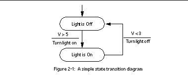
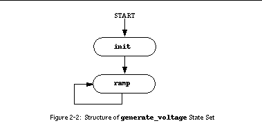

State Notation Language Concepts
The State Transition Diagram
The state transition diagram or STD is a graphical notation for specifying the behavior of a control system in terms of control transformations. The STD serves to represent the action taken by the control system in response to both the present internal state and some external event or condition. To understand the state notation language one must first understand the STD schema.
A simple STD is shown in figure 1. In this example the level of an input voltage is sensed, and a light is turned on if the voltage is greater than 5 volts and turned off if the voltage becomes less than 3 volts. Note that the output or action depends not only on the input or condition, but also on the current memory or state. For instance, specifying an input of 4.2 volts does not directly specify the output; that depends on the current state.

Elements of the State Notation Language
The following SNL code segment expresses the STD in See A simple state transition diagram:
state light_off {
when (v > 5.0) {
light = TRUE;
pvPut(light);
} state light_on
}
state light_on {
when (v < 3.0) {
light = FALSE;
pvPut(light);
} state light_off
}
You will notice that the SNL appears to have a structure and syntax that is similar to the C language. In fact the SNL uses its own syntax plus a subset of C, such as expressions, assignment statements, and function calls. This example contains two code blocks that define states:
light_off
and
light_on
. Within these blocks are
when
statements that define the events ("
v > 5.0
" and "
v < 3.0
"). Following these statements are blocks containing actions (C statements). The
pvPut
function writes or puts the value in the variable
light
to the appropriate control system variables. Finally, the next states are specified following the action blocks.
For the previous example to execute properly the variables
v
and
light
must be declared and associated with control system variables using the following declarations:
float v;
short light;
assign v to "Input_voltage";
assign light to "Indicator_light";
The above
assign
statements associate the variables
v
and
light
with the control system variables "
Input_voltage
" and "
Indicator_light
" respectively. We want the value of
v
to be updated automatically whenever it changes. This is accomplished with the following declaration:
monitor v;
Whenever the value in the control system changes, the value of
v
will likewise change (within the time constraints of the underlying system).
A Complete State Program
Here is what the complete state program for our example looks like:
program level_check
float v;
assign v to "Input_voltage";
monitor v;
short light;
assign light to "Indicator_light";
ss volt_check {
state light_off
{
when (v > 5.0) {
/* turn light on */
light = TRUE;
pvPut(light);
} state light_on
}
state light_on
{
when (v < 5.0) {
/* turn light off */
light = FALSE;
pvPut(light);
} state light_off
}
}
To distinguish a state program from other state programs it must be assigned a name. This was done in the above example with the statement:
program level_check
As we'll see in the next example, we can have multiple state transition diagrams in one state program. In SNL terms these are referred to as
state sets.
Each state program may have one or more named state sets. This was denoted by the statement block:
ss volt_check { ... }
Adding a Second State Set
We will now add a second state set to the previous example. This new state set generates a changing value as its output (a triangle function with amplitude 11).
First, we add the following lines to the declaration:
float vout;
float delta;
assign vout to "Output_voltage";
Next we add the following lines after the first state set:
ss generate_voltage {
state init {
when () {
vout = 0.0;
pvPut(vout);
delta = 0.2;
} state ramp
}
state ramp {
when (delay(0.1)) {
if ((delta > 0.0 && vout >= 11.0) ||
(delta < 0.0 && vout <= -11.0) )
delta = -delta; /* change direction */
vout += delta;
} state ramp;
}
}
The above example exhibits several concepts. First, note that the
when
statement in state
init
contains an empty event expression. This means unconditional execution of the transition. Because
init
is the first state in the state set, it is assumed to be the initial state. You will find this to be a convenient method for initialization. Also, notice that the
ramp
state always returns to itself. This is a permissible and often useful construct. The structure of this state set is shown in the STD in See Structure of generate_voltage State Set.

The final concept introduced in the last example is the
delay
function. This function returns a
TRUE
value after a specified time interval from when the state was entered. The parameter to
delay
specifies the number of seconds, and must be a floating point value (constant or expression).
At this point, you may wish to try an example with the two state sets. You can jump ahead and read parts of Chapters 3-5. You probably want to pick unique names for your control system variables, rather than the ones used above. You may also wish to replace the
pvPut
statements with
printf
statements to display "
High
" and "
Low
" on your console.
Variable Names Using Macros
One of the features of the SNL and run-time sequencer is the ability to specify the names of control system variables at run-time. This is done by using macro substitution. In our example we could replace the
assign
statements with the following:
assign v to "{unit}:ai1";
assign vout to "{unit}:ao1";
The string within the curly brackets is a macro which has a name ("
unit
" in this case). At run-time you give the macro a value, which is substituted in the above string to form a complete control system variable name. For example, if the macro "
unit
" is given a name "
DTL_6:CM_2
", then the run-time variable name is "
DTL_6:CM_2:ai1
". More than one macro may be specified within a string, and the entire string may be a macro. See See Specifying Run-Time Parameters for more on macros.
Data Types
The allowable variable declaration types correspond to the C types:
char
,
unsigned char
,
short
,
unsigned short
,
int
,
unsigned int
,
long
,
unsigned long
,
float
, and
double
. In addition there is the type
string
, which is a fixed array size of type
char
(at the time of writing, a string can hold 40 characters). Sequencer variables having any of these types may be assigned to a control system variable. The type declared does not have to be the same as the native control system value type. The conversion between types is performed at run-time.
You may specify array variables as follows:
long arc_wf[1000];
When assigned to a control system variable, operations such as
pvPut
are performed for the entire array.
Arrays of Variables
Often it is necessary to have several associated control system variables. The ability to assign each element of an SNL array to a separate control system variable can significantly reduce the code complexity. The following illustrates this point:
float Vin[4];
assign Vin[0] to "{unit}1";
assign Vin[1] to "{unit}2";
assign Vin[2] to "{unit}3";
assign Vin[3] to "{unit}4";
We can then take advantage of the
Vin
array to reduce code size as in the following example:
for (i = 0; i < 4; i++) {
Vin[i] = 0.0;
pvPut (Vin[i]);
}
We also have a shorthand method for assigning channels to array elements:
assign Vin to { "{unit}1", "{unit}2", "{unit}3", "{unit}4" };
Similarly, the monitor declaration may be either by individual element:
monitor Vin[0];
monitor Vin[1];
monitor Vin[2];
monitor Vin[3];
Alternatively, we can do this for the entire array:
monitor Vin;
And the same goes when synchronizing with event flags (See Synchronizing State Sets with Event Flags) and queuing monitors (See Queuing Monitors). SNL arrays are really quite powerful.
Double subscripts offer additional options.
double X[2][100];
assign X to {"apple", "orange"};
The declaration creates an array with 200 elements. The first 100 elements of
X
are assigned to (array)
apple
, and the second 100 elements are assigned to (array)
orange
.
It is important to understand the distinction between the first and second array indices here. The first index defines a 2-element array of which each element is associated with a control system variable. The second index defines a 100-element double array to hold the value of each of the two control system variables. When used in a context where a number is expected, both indices must be specified,
e.g.
X[1][49]
is the 50th element of the value of
orange
. When used in a context where a control system variable is expected,
e.g.
with
pvPut
, then only the first index should be specified,
e.g.
X[1]
for
orange
.
Dynamic Assignment
You may dynamically assign or re-assign variable to control system variables during the program execution as follows:
float Xmotor;
assign Xmotor to "Motor_A_2";
...
sprintf (pvName, "Motor_%s_%d", snum, mnum)
pvAssign (Xmotor[i], pvName);
An empty string in the assign declaration implies no initial assignment:
assign Xmotor to "";
Likewise, an empty string can de-assign a variable:
pvAssign(Xmotor, "");
The current assignment status of a variable is returned by the
pvAssigned
function as follows:
isAssigned = pvAssigned(Xmotor);
The number of assigned variables is returned by the
pvAssignCount
function as follows:
numAssigned = pvAssignCount();
The following inequality will always hold:
pvConnectCount() <= pvAssignCount() <= pvChannelCount()
Having assigned a variable, you should wait for it to connect before using it (although it is OK to monitor it). See See Connection Management.
Status of Control System Variables
Control system variables have an associated status, severity and time stamp. You can obtain these with the
pvStatus
,
pvSeverity
and
pvTimeStamp
functions. For example:
when (pvStatus(x_motor) != pvStatOK) {
printf("X motor status=%d, severity=%d, timestamp=%d\n",
pvStatus(x_motor), pvSeverity(x_motor),
pvTimeStamp(x_motor).secPastEpoch);
...
These routines are described in See Typographical conventions. The values for status and severity are defined in the include file
pvAlarm.h
, and the time stamp is returned as a standard EPICS
TS_STAMP
structure, which is defined in
tsStamp.h
. Both these files are automatically included when compiling sequences (but the SNL compiler doesn't know about them, so you will get warnings when using constants like
pvStatOK
or tags like
secPastEpoch
).
Synchronizing State Sets with Event Flags
State sets within a state program may be synchronized through the use of event flags. Typically, one state set will set an event flag, and another state set will test that event flag within a
when
clause. The
sync
statement may also be used to associate an event flag with a control system variable that is being monitored. In that case, whenever a monitor is delivered, the corresponding event flag is set. Note that this provides an alternative to testing the value of the monitored channel and is particularly valuable when the channel being tested is an array or when it can have multiple values and an action must occur for any change.
This example shows a state set that forces a low limit always to be less than or equal to a high limit. The first
when
clause fires when the low limit changes and someone has attempted to set it above the high limit. The second
when
clause fires when the opposite situation occurs.
double loLimit;
assign loLimit to "demo:loLimit";
monitor loLimit;
evflag loFlag;
sync loLimit loFlag;
double hiLimit;
assign hiLimit to "demo:hiLimit";
monitor hiLimit;
evflag hiFlag;
sync hiLimit hiFlag;
ss limit {
state START {
when ( efTestAndClear( loFlag ) && loLimit > hiLimit ) {
hiLimit = loLimit;
pvPut( hiLimit );
} state START
when ( efTestAndClear( hiFlag ) && hiLimit < loLimit ) {
loLimit = hiLimit;
pvPut( loLimit );
} state START
}
}
The event flag is actually associated with the SNL variable, not the underlying control system variable. If the SNL variable is an array then the event flag is set whenever a monitor is posted on any of the control system variables that are associated with an element of that array.
Queuing Monitors
Neither testing the value of a monitored channel in a
when
clause nor associating the channel with an event flag and then testing the event flag can guarantee that the sequence is aware of all monitors posted on the channel. Often this doesn't matter, but sometimes it does. For example, a variable may transition to 1 and then back to 0 to indicate that a command is active and has completed. These transitions may occur in rapid succession. This problem can be avoided by using the
syncQ
statement to associate a variable with both a queue and an event flag. The
pvGetQ
function retrieves and removes the head of queue.
This example illustrates a typical use of
pvGetQ
: setting a command variable to 1 and then changing state as an active flag transitions to 1 and then back to 0. Note the use of
pvFreeQ
to clear the queue before sending the command. Note also that, if
pvGetQ
hadn't been used then the active flag's transitions from 0 to 1 and back to 0 might both have occurred before the
when
clause in the
sent
state fired.
long command; assign command to "commandVar";
long active; assign active to "activeVar"; monitor active;
evflag activeFlag; syncQ active activeFlag;
state start {
when () {
pvFreeQ( active );
command = 1;
pvPut( command );
} state sent
}
state sent {
when ( pvGetQ( active ) && active ) {
} state high
}
state high {
when ( pvGetQ( active ) && !active ) {
} state done
}
The
active
SNL variable could have been an array in the above example. It could therefore have been associated with a set of related control system
active
flags. In this case, the queue would have had an entry added to it whenever a monitor was posted on any of the underlying control system
active
flags.
Asynchronous Use of pvGet()
Normally the
pvGet
operation completes before the function returns, thus ensuring data integrity. However, it is possible to use these functions asynchronously by specifying the
+a
compiler flag (see See Compiler Options). The operation might not be initiated until the action statements in the current transition have been completed and it could complete at any later time. To test for completion use the function
pvGetComplete
, which is described in See pvMonitor.
pvGet
also accepts an optional
SYNC
or
ASYNC
argument, which overrides the
+a
compiler flag. For example:
pvGet( initActive[i], ASYNC );
Asynchronous Use of pvPut()
Normally the
pvPut
operation completes asynchronously. In the past it has been the responsibility of the programmer to ensure that the operation completed (typically by monitoring other variables). However, the function
pvPutComplete
can now be used for this. Also, while the
+a
compiler flag does not affect put operations,
pvPut
, like
pvGet
, accepts an optional
SYNC
or
ASYNC
argument, which forces a synchronous or asynchronous put. For example:
pvPut( init[i], SYNC );
pvPutComplete
supports arrays and can be used to check whether a set of puts have all completed. This example illustrates how to manage a set of parallel commands.
#define N 3
long init[N];
long done[N]; /* used in the modified example below */
assign init to {"ss1:init", "ss2:init", "ss3:init"};
state inactive {
when () {
for ( i = 0; i < N; i++ ) {
init[i] = 1;
pvPut( init[i], ASYNC );
}
} state active
}
state active {
when ( pvPutComplete( init ) ) {
} state done
when ( delay( 10.0 ) ) {
} state timeout
}
pvPutComplete
also supports optional arguments to wake up the state set as each put completes. The following could be inserted before the first
when
clause in the
active
state above. The
TRUE
argument causes
pvPutComplete
to return
TRUE
when any command completed (rather than only when all commands complete). The
done
argument is the address of a
long
array of the same size as
init
; its elements are set to 0 for puts that are not yet complete and to 1 for puts that are complete.
when ( pvPutComplete( init, TRUE, done ) ) {
for ( i = 0; i < N; i++ )
printf( " %ld", done[i] );
printf( "\n" );
} state active
Connection Management
All control system variable connections are handled by the sequencer via the PV API. Normally the state programs are not run until all control system variables are connected. However, with the
-c
compiler flag, execution begins while the connections are being established. The program can test for each variable's connection status with the
pvConnected
routine, or it can test for all variables connected with the following comparison (if not using dynamic assignment, See Dynamic Assignment,
pvAssignCount
will be the same as
pvChannelCount
):
pvConnectCount() == pvAssignCount()
These routines are described in See Built-in Functions. If a variable disconnects or re-connects during execution of a state program, the sequencer updates the connection status appropriately; this can be tested in a
when
clause, as in:
when (pvConnectCount() < pvAssignCount()) {
} state disconnected
When using dynamic assignment, you should wait for the newly assigned variables to connect, as in:
when (pvConnectCount() == pvAssignCount()) {
} state connected
when (delay(10)) {
} state connect_timeout
Note that the connection callback may be delivered before or after the initial monitor callback (the PV API does not specify the behavior, although the underlying message system may do so). If this matters to you, you should synchronize the value with an event flag and wait for the event flag to be set before proceeding. See See Synchronizing State Sets with Event Flags for an example.
Multiple Instances and Reentrant Object Code
Occasionally you will create a state program that can be used in multiple instances. If these instances run in separate address spaces, there is no problem. However, if more than one instance must be executed simultaneously in a single address space, then the objects must be made reentrant using the
+r
compiler flag. With this flag all variables are allocated dynamically at run time; otherwise they are declared static. With the
+r
flag all variables become elements of a common data structure, and therefore access to variables is slightly less efficient.
Control System Variable Element Count
All requests for control system variables that are arrays assume the array size for the element count. However, if the control system variable has a smaller count than the array size, the smaller number is used for all requests. This count is available with the
pvCount
function. The following example illustrates this:
float wf[2000];
assign wf to "{unit}:CavField.FVAL";
int LthWF;
...
LthWF = pvCount(wf);
for (i = 0; i < LthWF; i++) {
...
}
pvPut(wf);
...